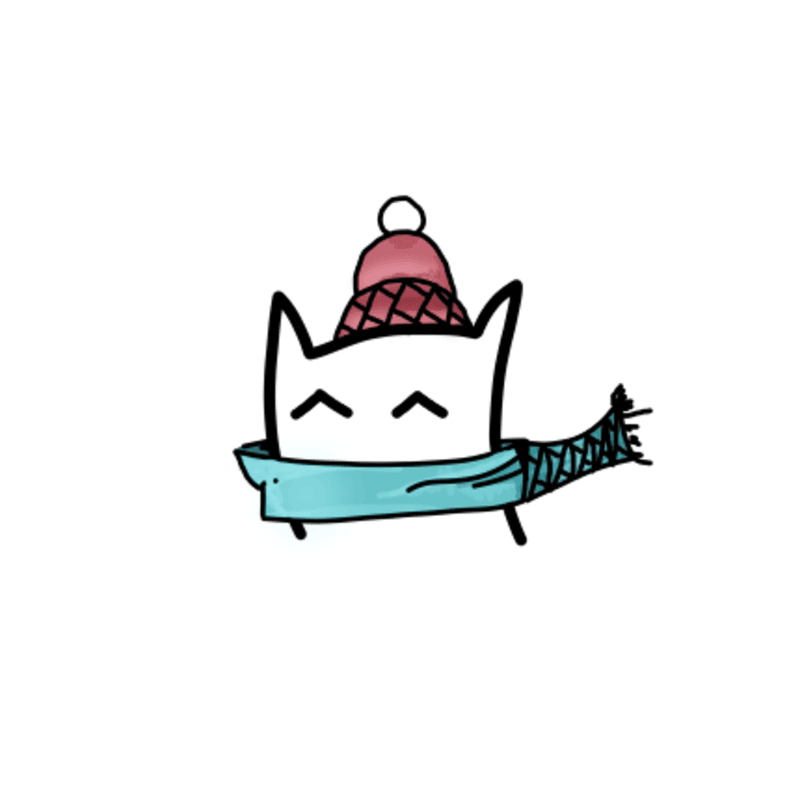

Hi, I'm Jspect and welcome to my website portfolio!!
I specialize in making video game remixes and original music in Logic Pro on my iPad.
First starting making beats in GarageBand at the beginning of 2021, I shifted my focus from playing the piano professionally to composing. I've been self-taught by countless of YouTube tutorials, and found my passion (and popularity) in remixing Nintendo Soundtracks into energetic EDM tracks.
Through my music making journey, I've experimented with making Anime music, EDM genres, such as Drum & Bass, Dubstep, Futurecore, and Artcore, and video game music.
Starting in 2025, I finally had the chance to make video game music for numerous different GameJams, such as GameJam Dingo 2025 and 2026, and Hackathon Pédagogique FSÉ @ UdeM 2026. It taught me how to spontaneously create melodies that fit a given tone while working under a strict time limit.
As of October 2026, I make music for our upcoming game with my game developer friend and continue to create content for my YouTube channel.